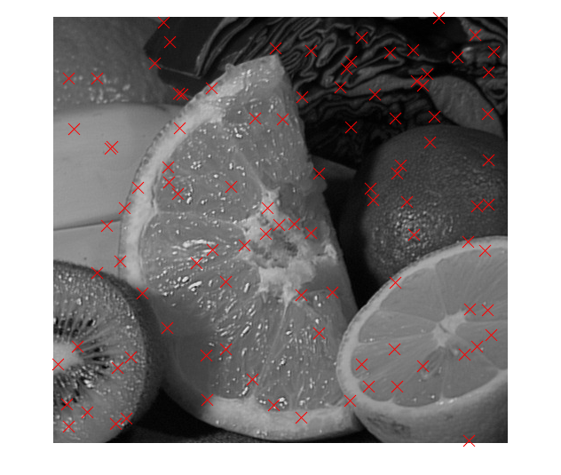

Contents
- Computer Vision (& Image Processing) with Matlab %%
- Read in an image
- Note that the image is class UINT8 rather than normal DOUBLEs
- Get the size of the image
- Display the image with imshow
- (Check out 'imagesc' as well)
- Convert the rgb image to a grayscale image
- NOTE: See other conversions under 'images' toolbox, 'help images'
- Display as another image in a new figure
- on figure handles
- Close the second figure and display both images
- in one figure using subplot
- Want to see the histogram of the image
- Threshold the image at a given level
- Display the thresholded image
- Second method of doing thresholding: Using matrix computations
- Again display the image
- Let's save our thresholded image in a file
- I want to see the saved image without explicitly using imread
- Want to convolve the gray level image with the gaussian
- "Printing" the figure to a jpeg image
- Resizing the image
- Displaying plots on top of images using 'hold'
- Select a subimage, both in color and grayscale:
- Extra
- X - Column, Y - Row
- Getting coordinates or image values
- A few more things:
echo off clear all home echo on %%%%%%%%%%%%%%%%%%%%%%%%%%%%%%%%%%%%%%%%%%%%%%%%%%%%%%%%
%%%%%%%%%%%%%%%%%%%%%%%%%%%%%%%%%%%%%%%%%%%%%%%%%%%%%%%%
%% Computer Vision (& Image Processing) with Matlab %%
%%%%%%%%%%%%%%%%%%%%%%%%%%%%%%%%%%%%%%%%%%%%%%%%%%%%%%%%
%%%%%%%%%%%%%%%%%%%%%%%%%%%%%%%%%%%%%%%%%%%%%%%%%%%%%%%%
% This tutorial is provided by Martial Hebert at CMU %
% with minor changes
%%%%%%%%%%%%%%%%%%%%%%%%%%%%%%%%%%%%%%%%%%%%%%%%%%%%%%%%
%
%% Read in an image
%
im1 = imread('fruits.jpg'); %% Give full path name in the string
Computer Vision (& Image Processing) with Matlab %%
%%%%%%%%%%%%%%%%%%%%%%%%%%%%%%%%%%%%%%%%%%%%%%%%%%%%%%%% %%%%%%%%%%%%%%%%%%%%%%%%%%%%%%%%%%%%%%%%%%%%%%%%%%%%%%%% % This tutorial is provided by Martial Hebert at CMU % % with minor changes %%%%%%%%%%%%%%%%%%%%%%%%%%%%%%%%%%%%%%%%%%%%%%%%%%%%%%%% %
Read in an image
im1 = imread('fruits.jpg'); %% Give full path name in the string pause %
pause % %% Note that the image is class UINT8 rather than normal DOUBLEs % class(im1)
Note that the image is class UINT8 rather than normal DOUBLEs
class(im1)
pause;
%
ans = uint8 pause; % %% Get the size of the image % imSize = size(im1)
Get the size of the image
imSize = size(im1)
pause;
home;
%
imSize = 480 512 3 pause; home; % %% Display the image with imshow %% %% (Check out 'imagesc' as well) % imshow(im1); %% SEE 'help imshow'
Display the image with imshow
(Check out 'imagesc' as well)
imshow(im1); %% SEE 'help imshow' pause %
pause % %% Convert the rgb image to a grayscale image %% NOTE: See other conversions under 'images' toolbox, 'help images' % grIm1 = rgb2gray(im1);
Convert the rgb image to a grayscale image
NOTE: See other conversions under 'images' toolbox, 'help images'
grIm1 = rgb2gray(im1);
pause;
home;
%
pause; home; % %% Display as another image in a new figure % figure(2), imshow(grIm1); %% NOTE: See 'help figure' for more options
Display as another image in a new figure
figure(2), imshow(grIm1); %% NOTE: See 'help figure' for more options
%% on figure handles pause;
on figure handles
pause;
home;
%
home; % %% Close the second figure and display both images %% in one figure using subplot % % - subplot(rows, cols, current) % close(2)
Close the second figure and display both images
in one figure using subplot
- subplot(rows, cols, current)
close(2) figure(1) subplot(1,2,1) % 'subplot 121' is also legal syntax imshow(im1) subplot 122, imshow(grIm1); pause home %
figure(1) subplot(1,2,1) % 'subplot 121' is also legal syntax imshow(im1) subplot 122, imshow(grIm1); pause home % %% Want to see the histogram of the image % clf % clear the current figure
Want to see the histogram of the image
clf % clear the current figure imhist(grIm1); %Check figure pause; home; %
imhist(grIm1); %Check figure pause; home; % %% Threshold the image at a given level % thresh = 100;
Threshold the image at a given level
thresh = 100; pause; % % First, the wrong way to do this using loops (bad programming style in Matlab) % % [rows, cols] = size(grIm1); % % tIm1 = grIm1; % % for i = 1:rows, %% for i = 1:1:rows (increments can be negative too) % for j = 1:cols, % if (grIm1(i,j)<=thresh), % tIm1(i,j) = 0; % end % end % end % pause echo off disp('Working...') [rows, cols] = size(grIm1); tIm1 = grIm1; for i = 1:rows, %% for i = 1:1:rows (increments can be negative too) for j = 1:cols, if (grIm1(i,j)<=thresh), tIm1(i,j) = 0; end end end echo on pause; %
pause; % % First, the wrong way to do this using loops (bad programming style in Matlab) % % [rows, cols] = size(grIm1); % % tIm1 = grIm1; % % for i = 1:rows, %% for i = 1:1:rows (increments can be negative too) % for j = 1:cols, % if (grIm1(i,j)<=thresh), % tIm1(i,j) = 0; % end % end % end % pause echo off Working... pause; % %% Display the thresholded image % imshow(tIm1); %Check figure
Display the thresholded image
imshow(tIm1); %Check figure pause; clear tIm1; home; %
pause; clear tIm1; home; % %% Second method of doing thresholding: Using matrix computations % tIm1 = grIm1;
Second method of doing thresholding: Using matrix computations
tIm1 = grIm1; index = find(grIm1<=thresh); %% SEE 'help find' pause; tIm1(index) = 0; pause; imshow(tIm1); pause; clear tIm1; home; %%%%%% Third method of doing thresholding: Composite statement % % tImage = (grIm1>thresh) .* (grIm1); %% use of pointwise % % multiplication pause; % %%MAJOR PAIN 1: The arithmetic operations are not defined over uint8 % variables so first convert them into double % tIm1 = double(grIm1>thresh).*double(grIm1); pause; %
index = find(grIm1<=thresh); %% SEE 'help find' pause; tIm1(index) = 0; pause; imshow(tIm1); pause; clear tIm1; home; %%%%%% Third method of doing thresholding: Composite statement % % tImage = (grIm1>thresh) .* (grIm1); %% use of pointwise % % multiplication pause; % %%MAJOR PAIN 1: The arithmetic operations are not defined over uint8 % variables so first convert them into double % tIm1 = double(grIm1>thresh).*double(grIm1); pause; % %% Again display the image % imshow(tIm1); %Check Figure
Again display the image
imshow(tIm1); %Check Figure % % Oops!! Doesn't look like earlier thresholded images... % WHAT happened !! % pause; % % MAJOR PAIN 2: The image display assumes the doubles in an image to be % between 0 and 1. If it is not, it chops the intensities outside % this range... (This causes bigger problems with 'imagesc') % % So, try casting the result to unit8 before displaying % tIm1 = uint8(tIm1); pause; imshow( tIm1 ); %Check Figure pause; home; %
% % Oops!! Doesn't look like earlier thresholded images... % WHAT happened !! % pause; % % MAJOR PAIN 2: The image display assumes the doubles in an image to be % between 0 and 1. If it is not, it chops the intensities outside % this range... (This causes bigger problems with 'imagesc') % % So, try casting the result to unit8 before displaying % tIm1 = uint8(tIm1); pause; imshow( tIm1 ); %Check Figure pause; home; % %% Let's save our thresholded image in a file % imwrite(tIm1, 'threshImage.jpg'); %% Saved as 'jpg'
Let's save our thresholded image in a file
imwrite(tIm1, 'threshImage.jpg'); %% Saved as 'jpg' pause; home; %
pause;
home;
%
%% I want to see the saved image without explicitly using imread
%
imshow('threshImage.jpg'); %Check Figure
I want to see the saved image without explicitly using imread
imshow('threshImage.jpg'); %Check Figure pause; home; % % A very useful function: fspecial % % Make a gaussian: % gaussFilt = fspecial('gaussian',31,4); % SEE 'help fspecial' pause; % % Display it as a 3D surface: % surf(gaussFilt); %% SEE 'help surf' or 'mesh' %Check Figure pause; home; %
pause;
home;
%
% A very useful function: fspecial
%
% Make a gaussian:
%
gaussFilt = fspecial('gaussian',31,4); % SEE 'help fspecial'
pause;
%
% Display it as a 3D surface:
%
surf(gaussFilt); %% SEE 'help surf' or 'mesh' %Check Figure
pause;
home;
%
%% Want to convolve the gray level image with the gaussian
% 'imfilter' performs 2D convolution and has nice
% boundary condition handling.
%
convIm = imfilter(grIm1, gaussFilt, 'symmetric');
Want to convolve the gray level image with the gaussian
'imfilter' performs 2D convolution and has nice boundary condition handling.
convIm = imfilter(grIm1, gaussFilt, 'symmetric'); pause; % % Now, show everything together on one plot, with titles: % Notice the blur after convolution subplot 131, imshow(grIm1); title('Grayscale Image') subplot 132, surf(gaussFilt); title('Gaussian Filter') subplot 133, imshow(convIm); title('Gaussian Filtered Image') %Check Figure pause; home %
pause;
%
% Now, show everything together on one plot, with titles:
% Notice the blur after convolution
subplot 131, imshow(grIm1); title('Grayscale Image')
subplot 132, surf(gaussFilt); title('Gaussian Filter')
subplot 133, imshow(convIm); title('Gaussian Filtered Image') %Check Figure
pause;
home
%
%% "Printing" the figure to a jpeg image
%
% arguments: figure 1, jpeg quality 90, 150dpi resolution, filename
%
% print(1, '-djpeg90', '-r150', 'convolution.jpg');
pause;
"Printing" the figure to a jpeg image
arguments: figure 1, jpeg quality 90, 150dpi resolution, filename
print(1, '-djpeg90', '-r150', 'convolution.jpg');
pause;
home;
%
home; % %% Resizing the image % clf;
Resizing the image
clf; imshow(im1) %Displaying the original image again %Check Figure pause; imResized = imresize(im1,1.5,'bicubic'); %Resize the image to 1.5times %using bicubic interpolation imshow(imResized) %Displaying the resized image %Check Figure pause; home; %
imshow(im1) %Displaying the original image again %Check Figure
pause;
imResized = imresize(im1,1.5,'bicubic'); %Resize the image to 1.5times
%using bicubic interpolation
imshow(imResized) %Displaying the resized image %Check Figure
Warning: Image is too big to fit on screen; displaying at 67%
pause;
home;
%
%% Displaying plots on top of images using 'hold'
%
clf
Displaying plots on top of images using 'hold'
clf imshow(grIm1) hold on x_pts = cols*rand(1,100); y_pts = rows*rand(1,100); plot(x_pts, y_pts, 'rx', 'MarkerSize', 16) %Check Figure hold off pause home; %
imshow(grIm1) hold on x_pts = cols*rand(1,100); y_pts = rows*rand(1,100); plot(x_pts, y_pts, 'rx', 'MarkerSize', 16) %Check Figure hold off pause home; % %% Select a subimage, both in color and grayscale: % subIm=grIm1(100:225,50:175);
Select a subimage, both in color and grayscale:
subIm=grIm1(100:225,50:175); subIm_col = im1(100:225,50:175,:); % note the extra ':' pause; subplot 121, imshow(subIm); subplot 122, imshow(subIm_col); %Check Figure pause; home; % % Want to see the intensity plot of a single row in the Image % line = subIm(100, :); pause; clf plot(line); %% SEE 'help plot' and 'help plot3' %Check Figure pause; home;
subIm_col = im1(100:225,50:175,:); % note the extra ':' pause; subplot 121, imshow(subIm); subplot 122, imshow(subIm_col); %Check Figure pause; home; % % Want to see the intensity plot of a single row in the Image % line = subIm(100, :); pause; clf plot(line); %% SEE 'help plot' and 'help plot3' %Check Figure pause; home; %% Extra % % Check functions 'imrotate' and 'imtransform' % pause;
Extra
Check functions 'imrotate' and 'imtransform'
pause;
home;
%
home; % %% %%%%%%% MAJOR PAIN 3: THE COORDINATE SYSTEM IN MATLAB (X,Y) % %% X - Column, Y - Row % % View pixel information with 'pixval' imshow(grIm1);
%%%%%%% MAJOR PAIN 3: THE COORDINATE SYSTEM IN MATLAB (X,Y) %
X - Column, Y - Row
View pixel information with 'pixval'
imshow(grIm1); axis on % pixval; impixelinfo; pause home; %
axis on % pixval; impixelinfo; pause home; % %% Getting coordinates or image values % % - 'ginput' gets coordinates selected with the mouse - IN X/Y!! % - 'impixel' can return values and/or coordinates (in ROW/COL) % using the mouse or for specified locations % [x,y] = ginput(1)
Getting coordinates or image values
- 'ginput' gets coordinates selected with the mouse - IN X/Y!! - 'impixel' can return values and/or coordinates (in ROW/COL) using the mouse or for specified locations
[x,y] = ginput(1)
pause
[c, r, val] = impixel(grIm1)
%
x = -60 y = 517 pause [c, r, val] = impixel(grIm1)
Error using getpts (line 173)
Interruption during mouse point selection.
Error in impixel>parse_inputs (line 199)
[xi,yi] = getpts(ancestor(h,'axes'));
Error in impixel (line 76)
[a,cm,xi,yi,x,y] = parse_inputs(varargin{:});
Error in matlab_image_tutorial (line 358)
[c, r, val] = impixel(grIm1)
A few more things:
- Another image display command you might want to try: 'imagesc' - Image axes - Grids - Colormaps - the Figure toolbar
clf imagesc(grIm1) pause axis image pause grid on pause colormap('default') pause; home;